Maps with R
2026 Workshop: Updating urban segregation computation with R
Center for spatial analysis and geovizualisation
2026 11 11
Thematic mapping
💀 rCarto (2013 - 2020)
🧟 cartography (2015)
🌟 mapsf (2021)
mapsf
Simple example
Simple example
Simple example
library(mapsf)
# Import the sample dataset
mtq <- mf_get_mtq()
# Plot the base map
mf_map(x = mtq)
# Plot proportional symbols
mf_map(
x = mtq,
var = "POP",
type = "prop",
leg_title = "Population"
)
# Plot a map layout
mf_title(
"Population in Martinique"
)
mf_arrow()
mf_scale()
mf_credits(
"Sources: INSEE & IGN, 2018"
)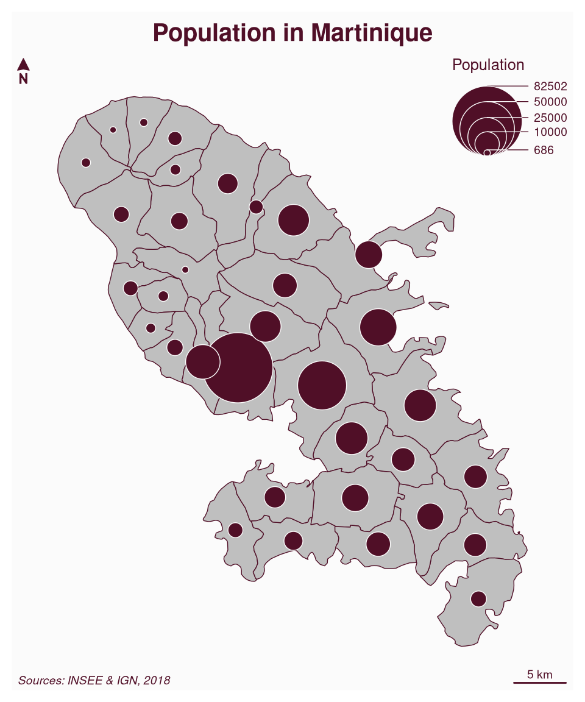
More advanced example
# Create a map with a theme and extra margins
mf_theme("dracula")
# Plot a choropleth map
mf_map(
x = mtq, var = "MED", type = "choro",
pal = "Dark Mint",
breaks = "ckmeans",
nbreaks = 6,
leg_title = "Median Income\n(euros)",
leg_val_rnd = -2,
expandBB = c(0, 0, 0, .3)
)
# Start an inset map
mf_inset_on(x = "worldmap", pos = "right")
# Plot mtq position on a worldmap
mf_worldmap(mtq, col = "#0E3F5C")
# Close the inset
mf_inset_off()
# Plot a title
mf_title("Wealth in Martinique, 2015")
# Plot credits
mf_credits("T. Giraud\nSources: INSEE & IGN, 2018")
# Plot a scale bar
mf_scale(size = 5)
# Plot a north arrow
mf_arrow("topleft")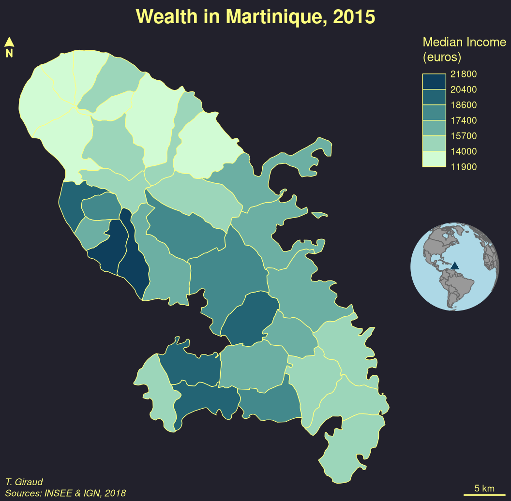
Spatial Analysis
Spatial Analysis
potential
Functions to compute the potential model as defined by Stewart (1941). Several options are available to customize the model.

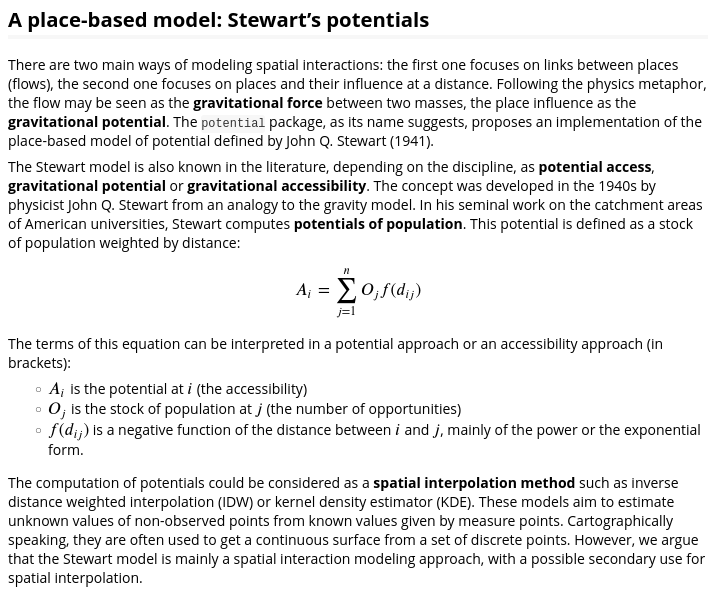
Base map - Raster
maptiles
Download, compose and displays raster tiles from a large number of providers (e.g. OpenStreetMap, Stadia, Esri, CARTO, or Thunderforest).
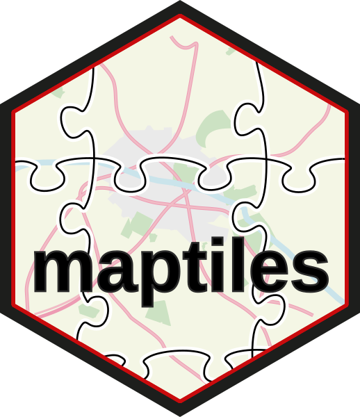
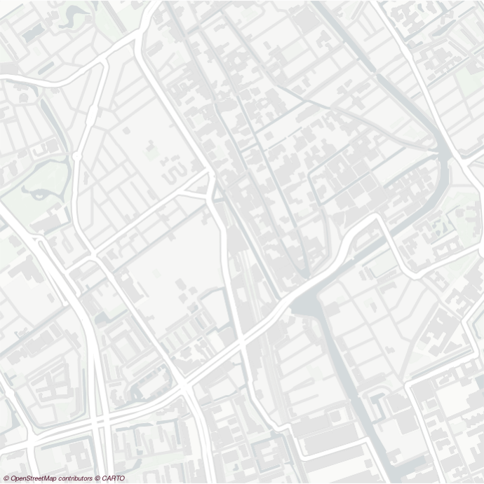
Base map - Vector
maposm
Download and assemble multiple geographic layers from the OpenStreetMap database for mapping purposes.
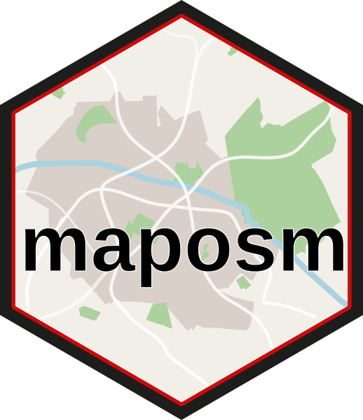
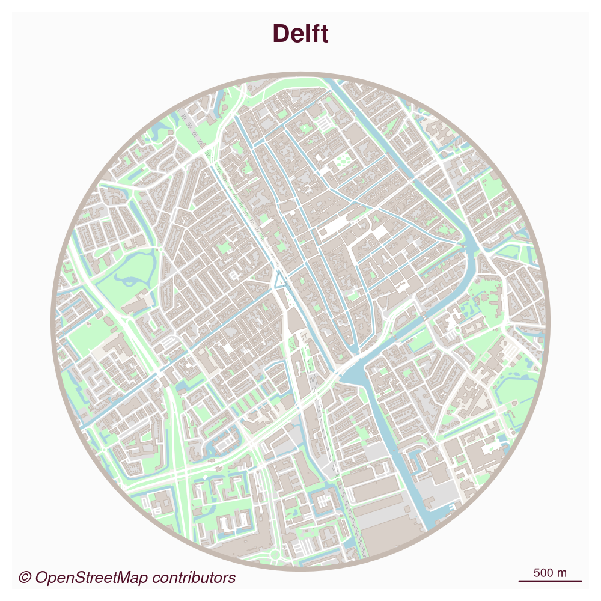
Accessibility
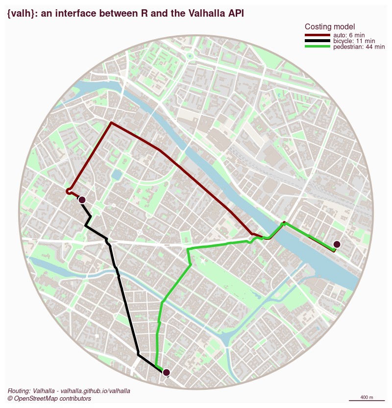
Accessibility
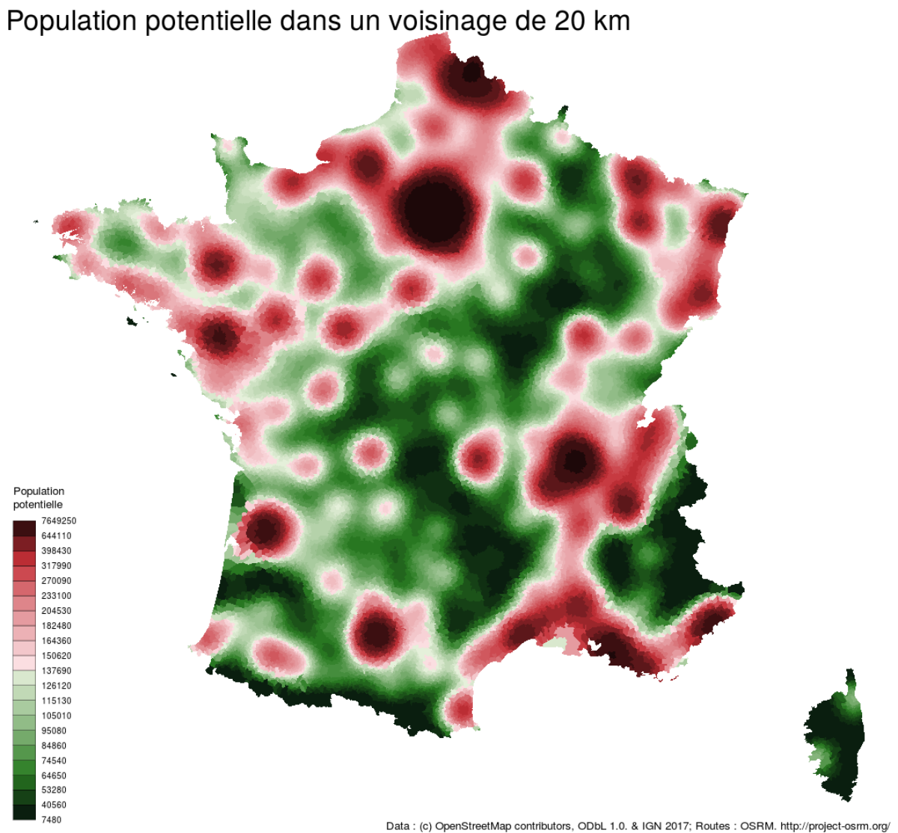
Accessibility
osrm
Interface between R and the OpenStreetMap-based routing service OSRM.
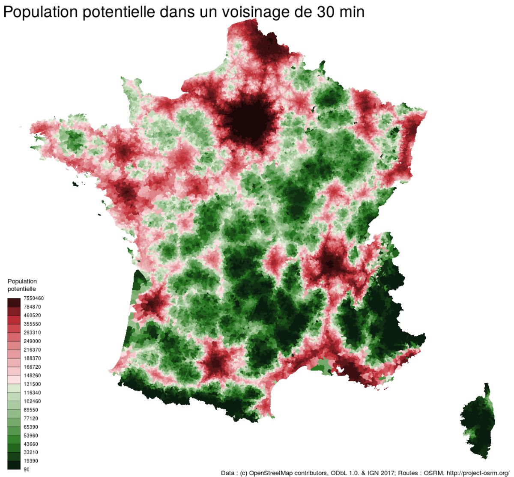
Maping Urban Segregation
We want to create various maps of indices.
To my knowledge, these maps are not specials:
- geographic layers,
- proportional symbols,
- choropleth,
- typologies,
- some combinations
They could be more fun 😀
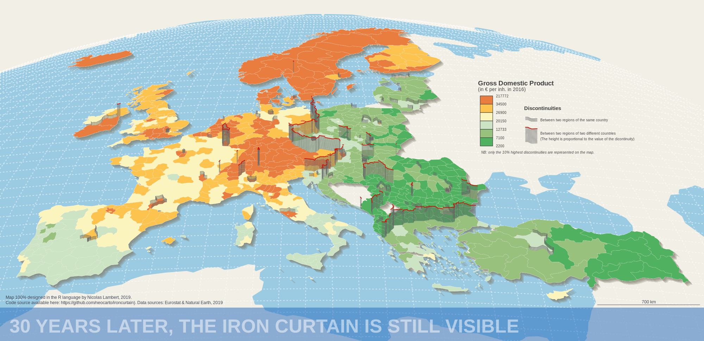
Lambert (2021)
No dependencies
Without using other packages we can create:
output that are
sfobjects ready to be mapped (with explicit modalities, labels, explicit variable names…).
It allows each user to select its preferred thematic mapping backend.
Package vignettes and website can show simple or very detailed examples.ad-hoc mapping functions from scratch (with
sffunctions)
Thematic Cartography
mapsf (Giraud, 2021)
ggplot2
ggplot2 + ggspatial
- it’s already on everyone’s computer (not always on mine, though).
- it’s extendable with new types (is it a need?)
Thematic mapping packages
tmap
- 30-40k / month
- ggplot2-like syntax
- interactive maps
mapsf
- 3-4k / month
- base R syntax
- lightweight
Thematic mapping packages
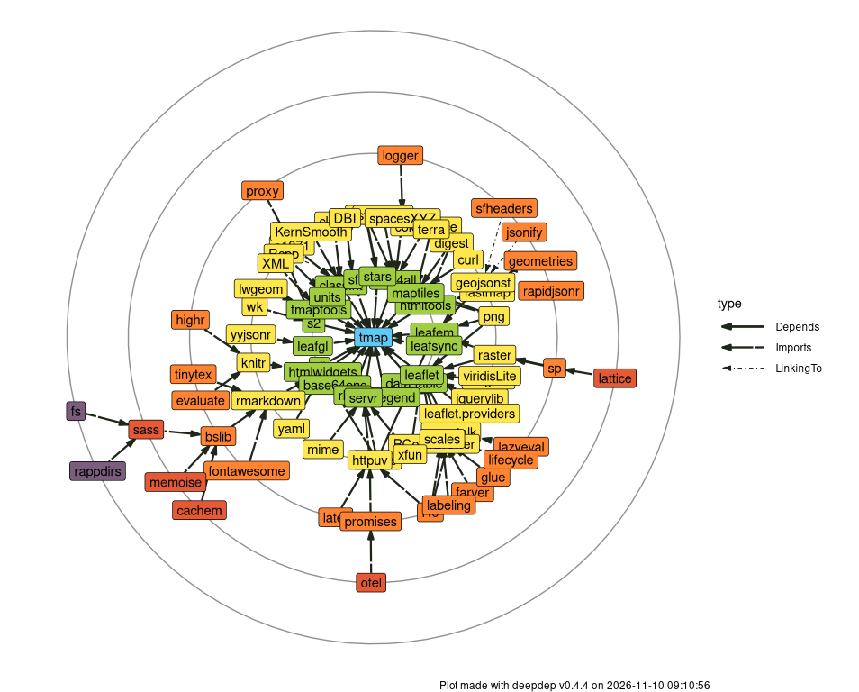
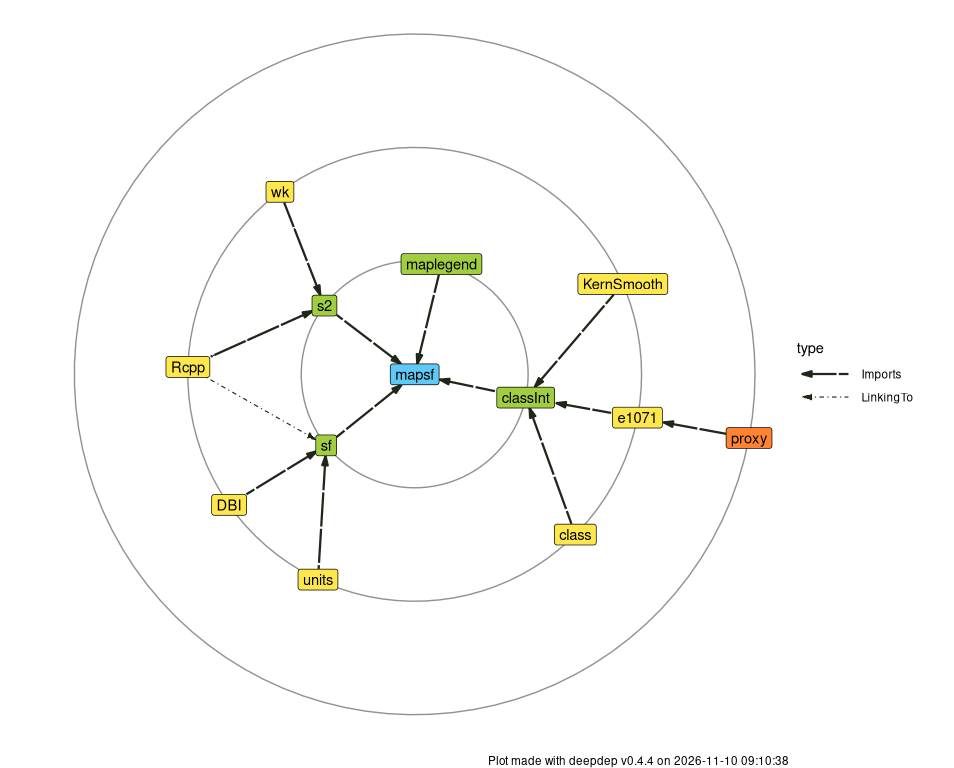
Interactive Maps
They are probably useful for Explanatory Data Analysis and several packages allows to create interactive maps.

leaflet (Cheng et al., 2015)
Interactive Cartography
mapsf.gui provides an interactive interface for creating thematic maps using the mapsf package.
It automatically generates the corresponding R code to reproduce the map.
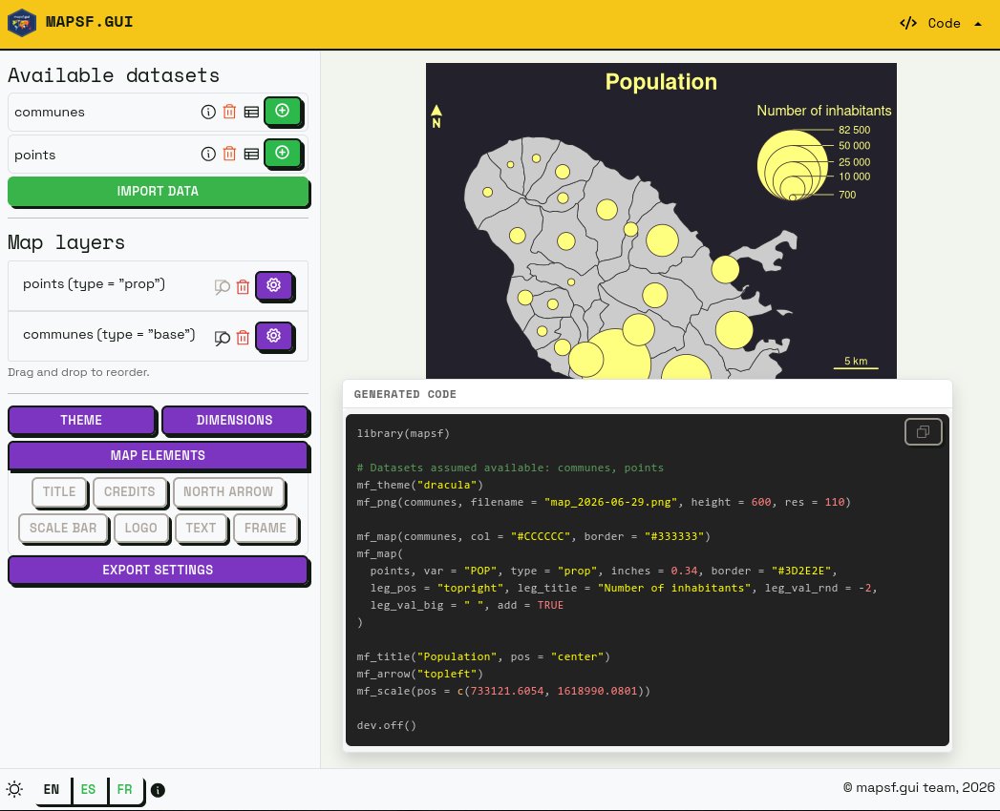